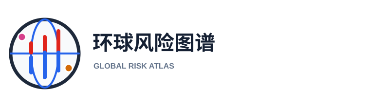

环球风险图谱 · 原创 Logo 方案
六个独立方向，均采用矢量图形，便于网页、应用图标和后续印刷使用。
方案二：风险断层
GRA 缩写 × 断层裂口 深色方形底座上的双色断层形成识别度强的字母结构。方案三：五维风险盘
五类事件 × 统一中心 五色扇区对应加息、冲突、卫生、金融等风险维度，含义直接。方案四：立体图谱
全球网格 × 数据走势 立体地图块配合走势线，最像专业全球风险数据产品。
六个独立方向，均采用矢量图形，便于网页、应用图标和后续印刷使用。
